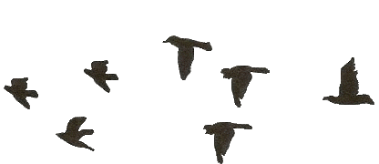
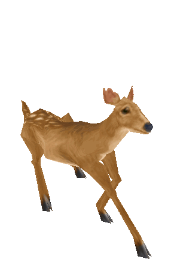

I'm Udhaya
a talent acquisition lead

Udhayakumar V
Lead / Assistant Manager – Talent Acquisition | IT Recruitment Leader
Profile Summary
Results‑driven IT Recruitment Leader with 12+ years of end‑to‑end talent acquisition experience, targeting Lead or Assistant Manager roles in Bangalore, Chennai, or Coimbatore. Excel in team leadership, stakeholder management, and scaling recruitment operations through Boolean mastery, X‑ray sourcing, and market‑driven strategies. Leverage a 23,000+ LinkedIn network, GitHub, and Stack Overflow to source elite technical talent for leadership, cybersecurity, full‑stack, and cloud roles.
Areas of Expertise
- Leadership & mid‑level hiring (Architects, PMs, Directors, AVPs, VPs)
- Cybersecurity hiring (Cloud, Data, AI, Secrets Management, CyberArk, Email, App & Network Security)
- Full‑stack & cloud engineering (Java Full Stack, Python, DevOps, Big Data, React, Angular, GCP, AWS)
- Volume hiring, Boolean/X‑ray search, employee referrals, vendor management
- ATS tools: Jira, Smart Recruiters, TalentRecruit, JobDiva, Oracle Fusion, Darwinbox, ICIMS, HireRight
- Interview drives (virtual, walk‑in), technical screening, case study rounds, AWS‑based coding workspace
Professional Experience
Lead Recruitment – Photon Interactive, Chennai
May 2024 – Present
- Lead 4‑member team handling leadership and cybersecurity hiring for Architects, PMs, Directors, AVPs, VPs across India.
- Manage full‑lifecycle recruitment for IT roles, including project, stakeholder, and vendor management.
- Mentor team on quality sourcing, Boolean/X‑ray search, and Naukri/LinkedIn Recruiter usage.
- Create Jira & Excel dashboards for daily account and sales calls; support fixed‑bid and T&M projects.
Senior Consultant – Recruitment – Annalect (Omnicom Media Group), Chennai
Jul 2023 – Mar 2024
- End‑to‑end recruitment for Senior Associates, SMEs, Leads, Architects, Technical Managers, and ADs.
- Own market research, sourcing, scheduling, salary negotiations, offers, and onboarding.
- Lead employee referral program for Creative Business Unit and closed majority of roles via ER.
Senior Talent Acquisition – Publicis Sapient, Bangalore
May 2021 – Nov 2022
- Hire Senior Associates, Architects, Technical Managers, and Senior Technical Managers across India.
- Manage sourcing, screening, scheduling, and documentation with US stakeholders.
- Update SharePoint and Power BI dashboards for tracking candidates.
Talent Acquisition – Technosoft Corporation, Chennai
Oct 2019 – Apr 2021
- Manage 4‑member team and requirements for Ford, Fiat Chrysler, PayPal, World Bank Group.
- Conduct JD clarity calls, break down requirements, and assign tasks.
Lead – Talent Acquisition Specialist – Sensiple Software, Chennai
Aug 2016 – Oct 2019
- Lead 5‑member team for internal product and client roles (Flatirons Jouve, Gap Inc, CMS).
- Translate business directions into hiring plans and coordinate onboarding.
IT Recruiter – IDC Technologies, Chennai
May 2014 – Jul 2016
- Source candidates via Boolean search on portals (Monster, Dice, CareerBuilder) and internal DB.
- Screen and negotiate rates with employers and consultants.
Education & Certifications
B. Tech, Information Technology – Anna University, 2011
- Microsoft Excel: Advanced Excel Formulas & Functions – Udemy
- Excel with LinkedIn Recruiter Assessment
- Python Programming – Basic Level